开始使用
LemmaLoom 附带一个名为“气候辩论”的示例项目。你可以导入它，试用应用中的各种工具。本指南的大部分例子都取自这个项目。其中的评论文章、专栏和演讲都是虚构的，报告和电台辩论录音也是如此。如与真实人物或出版物雷同，纯属巧合。这些文本不代表任何人的观点，也无意说服你接受任何看法。
要把这个示例项目作为新项目添加到资料库中，请选取文件 ▸ 导入 ▸ 示例项目。正在导入示例项目对话框会显示进度。对话框关闭后，“气候辩论”就成为当前项目。导入的项目使用哪种语言，取决于 LemmaLoom 当前的界面语言，可能是英语、德语或中国大陆简体中文。如何切换界面语言，请参阅第 1 章“简介”中的支持的语言。本章提到的所有文档、文档集、编码、属性和已存储的查询，在导入的项目中都有。
你也可以用几篇自己的文本来跟着例子操作，凡是例子用到“气候辩论”里某个文档的地方，都换成你自己的文档。
首次启动 LemmaLoom
第一次启动时，LemmaLoom 的应用窗口分为三栏（导航栏、阅读区和检查器）。还没有项目时，导航栏和检查器都是空白的。同样，在你创建项目并打开文档之前，检查器顶部的四个标签页图标都处于停用状态。应用的所有设置都可以通过 LemmaLoom ▸ 设置…（⌘,）打开。
开始之前，有两项设置值得检查，它们都在通用中。第一项是主题，它把所选的配色应用到 LemmaLoom 的整个界面。主题可以跟随 Mac 系统所选的浅色或深色外观（系统），也可以改用奶油色、高对比度深色或其他主题。
界面语言既决定 LemmaLoom 的显示语言，也决定导入示例项目时使用的语言。选择系统默认时，界面语言与你的 Mac 所用的语言一致；其他可选的语言有 English、Deutsch 和简体中文（即中国大陆简体中文）。对界面语言所做的更改，要在用这个菜单下方的退出 LemmaLoom 关闭应用并重新启动后才生效。

在设置窗口中，通用还包括转写录音所用的语音识别模型，以及导入对话框使用的排除预设。其他部分有阅读器（控制阅读器中文本样式的设置）和透镜，你可以在透镜中自定义透镜的样式。第 24 章“设置与外观”逐项介绍设置窗口中的各个选项。
只有英语、德语和中文文档会进行语法分析。其他语言的文档可以作为纯文本导入，照样可以阅读、编码和搜索。如果其他语言的文档需要语法分析，就要改为分析它的英语、德语或中文译文。这时，分析结果反映的是译文中的语法结构。关于如何在 LemmaLoom 中管理译文，请参阅第 9 章“译文与分屏浏览”。
要查看应用中各种术语的简短解释，请选取帮助 ▸ 术语表。在主窗口中工作时，术语表窗口可以一直开着。
LemmaLoom 如何组织工作
你在 LemmaLoom 中所做的一切都存放在资料库里。资料库其实就是你的 Mac 上的一个文件夹。详细情况见下文的工作保存在哪里。
在资料库中，每项研究都有自己的项目。项目中存放你要研究的文本，也存放你在分析过程中做出的一切，包括编码及其编码实例、备忘录和链接、文档集和分组。词典和已存储的查询也保存在项目中。各个项目彼此独立。在一个项目上运行的查询只看得到这个项目的文档。一般来说，最好把一项研究的所有相关材料都放在同一个项目中。
有三样东西由所有项目共用。标签都来自同一份列表，可以通过窗口 ▸ 标签查看。为所有项目存储的查询在每个项目中都能使用；此外，你还可以同时查询多个项目。具体做法见第 3 章“项目与文档”中的跨项目工作。你为 LemmaLoom 编写的分析器是一些标注文字的小脚本，在每个项目中都可以通过窗口 ▸ 分析器使用。关于分析器在 LemmaLoom 中如何工作，请参阅第 20 章“自定义分析器”。
每一份导入的文本都是项目中的一个文档。文档可以是一篇报刊文章、一篇演讲稿或一个 PDF 文件的内容，也可以是一篇取自网页的文章，或者一段音频、视频录音的转写文本。导入文档时，LemmaLoom 会保存一份自己的副本，无论原文件在别处怎样修改，这份副本都保持原样。更正应当直接在 LemmaLoom 中进行，不过 LemmaLoom 的更正功能相当有限。一般来说，只导入已经定稿或者只需少量修改的文档。大幅修改最好在 LemmaLoom 之外完成，然后把修改后的文本粘贴到 LemmaLoom 的编辑器中，或者在修改完成后重新导入文档。
把文档导入项目后，LemmaLoom 会在后台处理这些文档。这一步称为建立索引，包括把文本切分成句子和词，并分析每个句子的语法结构。LemmaLoom 会找出每个词的词典形式，即词元；英文 runs 和 ran 的词元都是 run。LemmaLoom 还会确定词类（名词、动词等）。关于索引的更多内容，请参阅第 21 章“分析与索引”。词汇速写、透镜、大多数查询以及检查器的语法标签页都依赖索引结果。编码和阅读则在索引完成之前就可以进行。建立索引所需的时间取决于文档的大小和电脑的性能。
LemmaLoom 的主窗口一次显示一个项目，称为当前项目。每个项目打开的标签页、你在每个文档中的位置以及所选的透镜，在下次启动应用时都会保留。
新建项目
项目只需要一个名称，不过你也可以为它指定颜色和标签，以及项目中所有文档共用的属性。属性为每个文档记录一项事实信息，例如发表日期或文本所代表的立场。属性属于整个项目，在每个文档中都可以有一个值。如果在创建项目时就定义好属性，导入文档时就能顺便填写属性值。属性中保存的值最终可以用来按各种属性给文档分组、比较文档，所以值得比较的事实信息，都可以考虑做成属性。
标签只有名称，可以加在项目和文档上，用作整理工具；标签代表什么，完全由你决定。
“气候辩论”定义了四个属性：
| 名称 | 类型 | 选项 | 用途 |
|---|---|---|---|
| 立场 | 选择器 | 行动派、怀疑派、中立 | 比较辩论双方，以及只报道这场辩论、不偏向任何一方的来源 |
| 读者数 | 整数 | 挑选读者众多的文本，智能文档集“广泛传播”就是这样做的 | |
| 发表日期 | 日期 | 确定每篇文本的发表时间 | |
| 媒体 | 文本 | 记录每篇文本刊登在哪里 |
每个属性都有一种数据类型。关于可用的类型以及如何更改属性的类型，请参阅第 8 章“文档集、分组、标签和属性”。“立场”是选择器类型的一个例子，选择器只接受你列出的选项。如果无法事先列出所有值，例如“气候辩论”中的媒体，就应当使用文本。整数属性存储整数，小数和布尔值属性则分别存储小数和是或否的值。
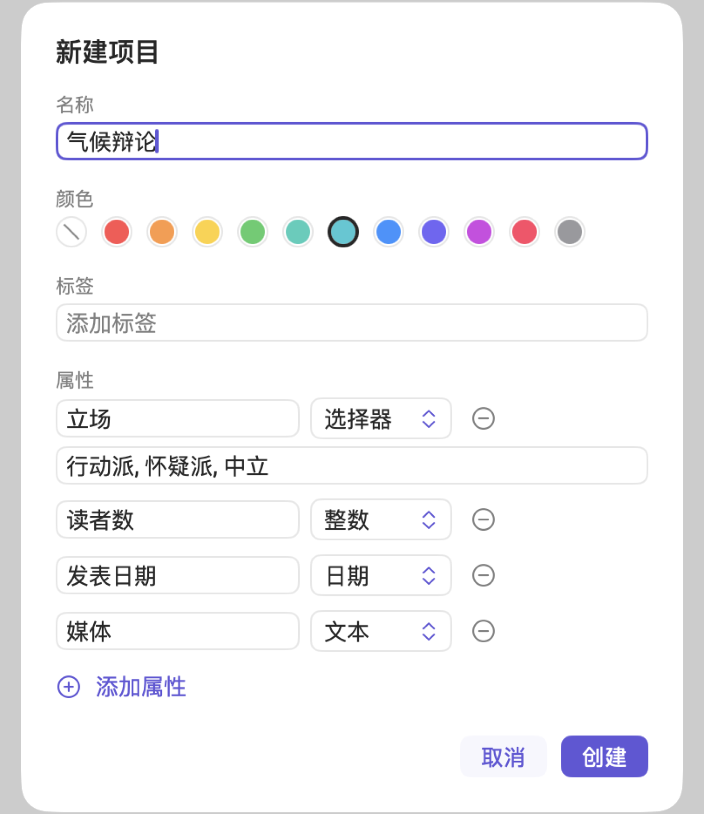
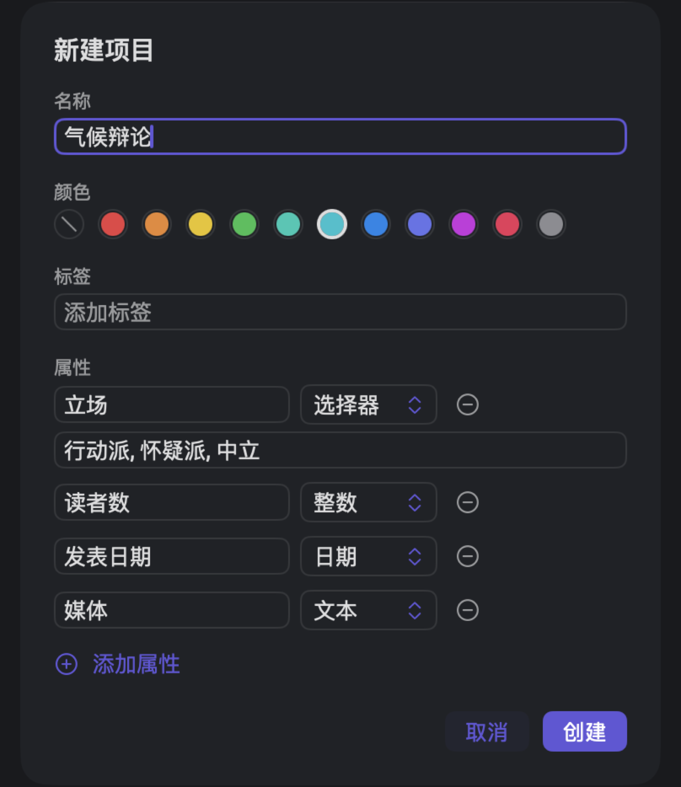
新建项目的步骤如下：
- 选取文件 ▸ 新建项目（⇧⌘N）。
- 在名称中输入项目名称。如果这一栏留空，项目会命名为“新建项目”。
- 如果需要颜色，在颜色下点按一种颜色。导航栏中项目的图标会使用这种颜色。
- 在标签下输入一个标签，然后按下 Return 键或输入英文逗号。标签取自所有项目共用的同一份列表。
- 在属性下，每个属性点按一次添加属性。在新出现的行中，把名称输入左侧的输入框，再从菜单中选择类型。如果类型是选择器（一组固定的选项），就在名称和类型下方逐行输入各个选项，每行一个；点按添加选项可以再加一行。
- 点按创建。
新项目会出现在导航栏的项目下，并随即成为当前项目。
要切换项目，在项目下选择一个即可。导航栏顶部是收藏，列出你想快速打开的项目。将鼠标指针悬停在项目上，再点按出现的星形图标，就可以把它加入收藏。右键点按项目，会出现重命名、信息和属性等选项。第 3 章“项目与文档”介绍了所有这些选项。
导入文档
LemmaLoom 可以导入四类来源：
- 纯文本文件；
- PDF 文件；
- 音频和视频文件；
- 网页，通过文件 ▸ 导入 ▸ 网页（⌥⇧⌘I）导入。
示例项目“气候辩论”包含全部四类来源。评论文章、专栏、博客文章和一篇演讲是作为纯文本导入的，“2024 热浪报告”导入自一个 PDF 文件。“电台辩论”导入自一个音频文件，“碳税之争”则是作为网页导入的。所有导入的文档都带有发表日期，以及项目中所定义属性的值。以“时间不多了”为例，它发表于 2024 年 8 月 21 日，“立场”的值为“行动派”，“读者数”为 412,000，并且属于“纸媒”分组。
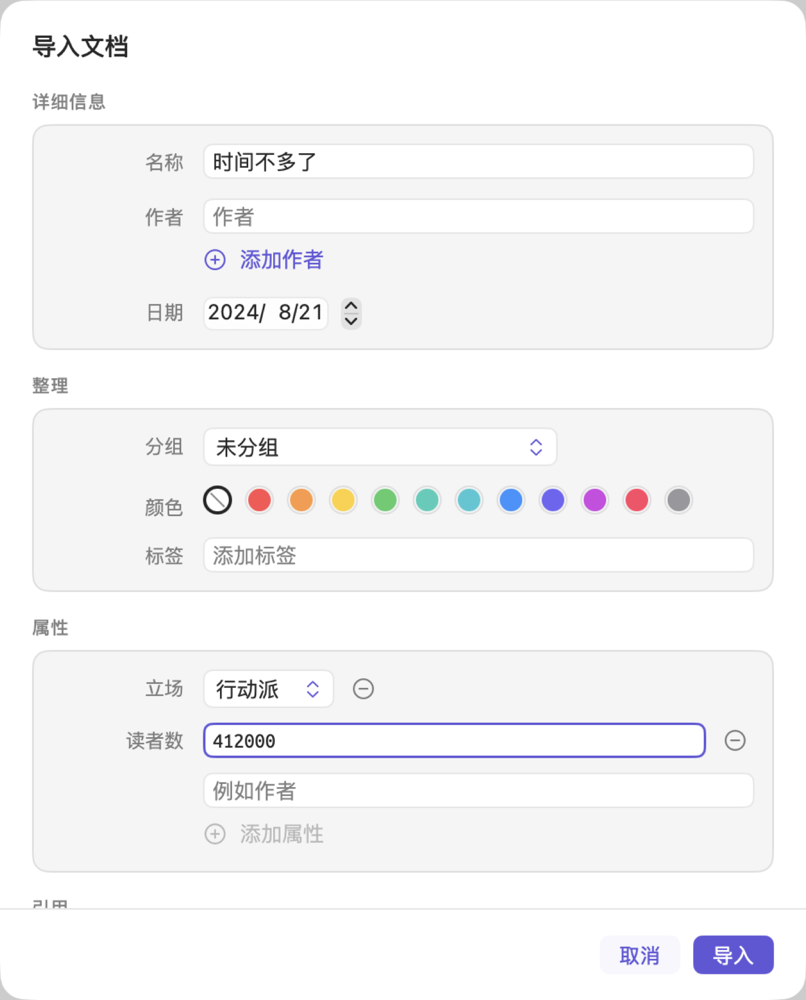
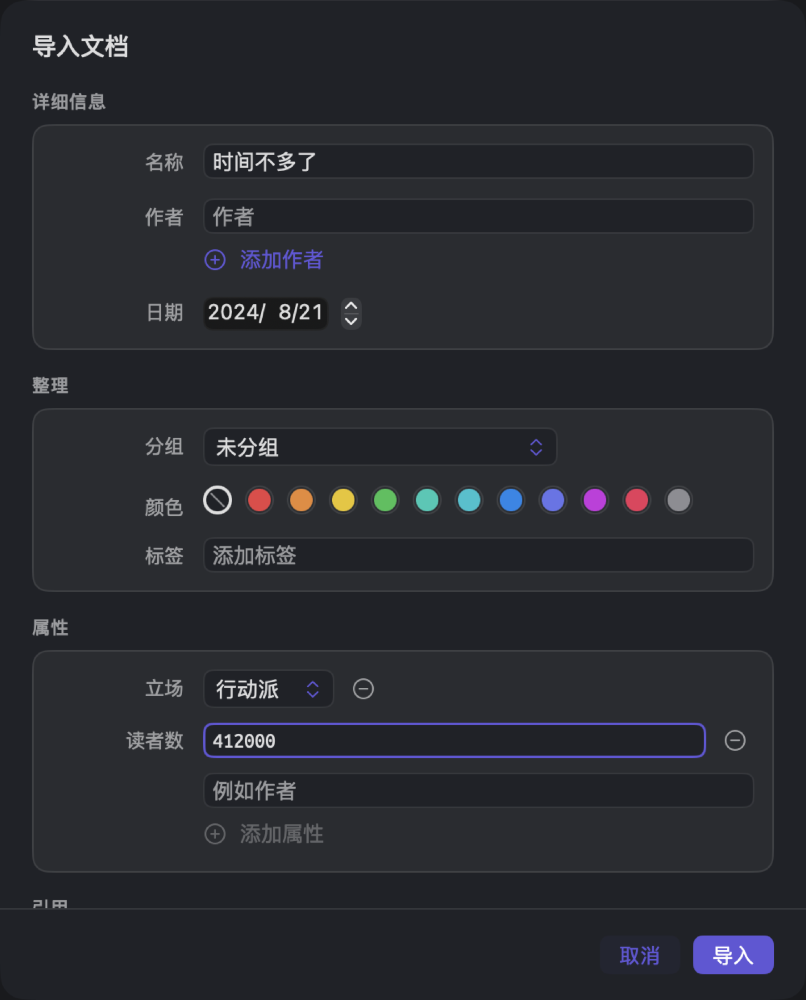
导入文本文件的步骤如下：
- 确认你要用的项目是当前项目（它的名称在项目下以粗体显示）。
- 选取文件 ▸ 导入 ▸ 文档（⇧⌘I）。
- 选择文件，然后点按打开。你可以一次选择多个文件。
- 导入文档对话框随即打开。检查下文介绍的各项内容，然后点按导入。
在整理中，你可以把文档放进项目的某个分组，或者让它保持未分组，还可以为文档设置颜色、添加标签。分组在导航栏中的作用很像文件夹，用来把同类文档放在一起，就像“气候辩论”中的“纸媒”和“网络”。一个文档可以同时属于多个文档集，但只能属于一个分组（未分组的文档除外）。分组主要用来整理导航栏中的内容，而文档集和智能文档集则在分析中发挥作用。
在属性下，填写这个文档在项目各个属性上的实际值。开始输入属性名称时，会出现一个建议列表，列出已有属性的名称及其类型（“立场 · 选择器”）。点按添加属性，然后在出现的行中选择或输入值。
你也可以直接新建一个属性。只要输入一个尚未使用的名称，名称旁边就会出现一个菜单，供你选择属性的类型。如果是选择器，再逐行输入各个选项，每行一个。另一种做法是先不填值，以后再一次为多个文档填写；也可以以后在文本标签页的详细信息分面中逐个文档填写。详见下文的填写属性值。
索引决定是否以及如何为这个文档建立索引。语言的默认设置是自动，由程序根据文档内容推断语言。如果推断可能不准确，可以手动把语言设为英语、德语或中文。例如，对于一段很短且夹杂另一种语言的文本，这样设置就会有帮助。
为语法分析建立索引默认已勾选；如果这个文档只需要阅读或编码，用不着建立索引，就取消勾选。你也可以把一个大文档的索引推迟到以后再建立。之后点按阅读器底部状态栏中的立即建立索引按钮，就会开始建立索引。再往下，分析器下有一些复选框，用来启用特定的分析，其中包括内置的衔接、元话语和修辞分析器，以及你自己编写的分析器，它们一开始全部勾选。取消勾选某一项，就会对这个文档停用相应的分析器。
从索引中排除中存放正则表达式模式，用来匹配不应计入分析的文本。最常见的例子是说话人标签和时间戳。处理转写文本时，通常都会用到这个功能。第 4 章“导入资料”列出了一些常用的排除模式。正则表达式是一种描述某类文本的特殊写法。输入框中给出了一个例子（\[\d+:\d+:\d+\]），这个模式表示方括号中以冒号分隔的三个数字，例如 [00:12:31]。你可以自己输入模式，然后点按添加，也可以从预设中选择，其中包括时间戳 [hh:mm:ss]（就是这个模式）等。匹配到的文本仍然显示在阅读器中，也仍然可以编码，只是不计入分析。
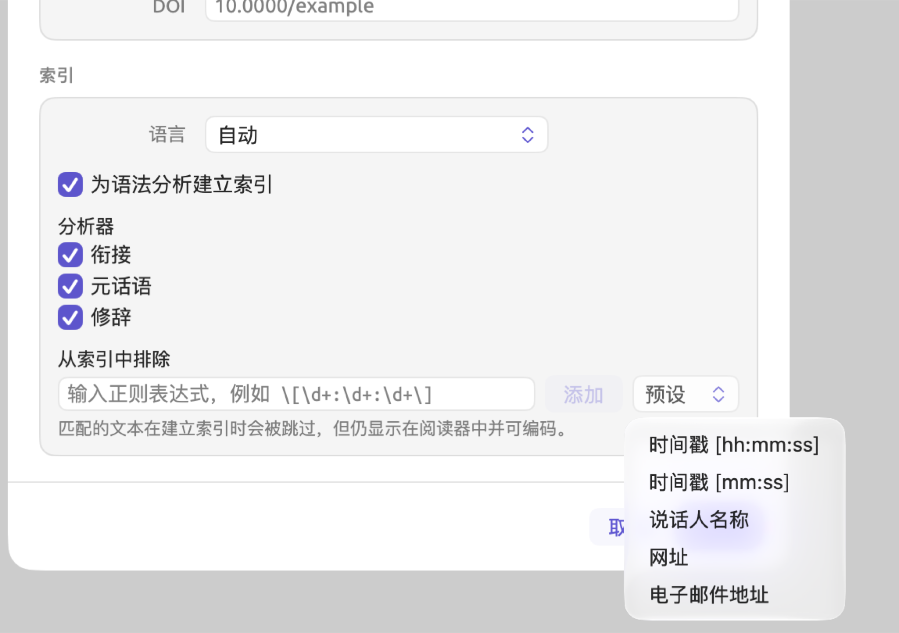

一次导入多个文件时，对话框会为每个文件各出现一次，并在右上角显示当前的顺序（例如 2 / 10）。跳过会略过当前文件，转到下一个文件；取消会停止导入其余所有尚未确认的文件。已经确认的文件在取消后仍会继续导入。
导入之后
文档会出现在导航栏的文档标题下，名称后面还有检测到的或你选择的语言代码，例如 ZH。建立索引期间，标题呈灰色，旁边有一个随进度逐渐填满的指示器。索引完成后，指示器就会消失。
活动窗口（窗口 ▸ 活动，⌥⌘0）显示所有项目中正在进行的工作，并按状态把文档分别列在正在导入、正在翻译、正在建立索引、失败和等待中几个列表中。活动窗口中的项目菜单旁边有一个导入菜单，可以把文档或网页导入你的项目。


在导航栏中点按文档所在的行，就会为这个文档单独打开一个标签页。即使还没有建立索引，你也可以在阅读器中看到它的文本，但在索引完成之前：
- 标题栏中的透镜菜单已停用，悬停提示为索引完成后即可使用透镜；
- 检查器的语法标签页和多重模式标签页的速写空间分面都显示索引完成后即可查看语法信息；
- 文本标签页中原本显示统计数据的地方，显示的是索引完成后即可查看统计数据；
- 阅读器下方的状态栏显示当前阶段（例如解析结构）和百分比。
如果 LemmaLoom 无法为文档的语言建立索引，导航栏中文档标题旁边会显示一个问号图标，状态栏则会显示例如不支持法语的语法分析这样的信息。
认识主窗口
主窗口左侧是导航栏，中间是阅读区，右侧是检查器。在导航栏中，你可以选择要打开的项目，并打开它的文档、文档集和视图。阅读区顶部是一排标签页，标签页上方是标题栏，其中有当前标签页中文档的各项控件。在阅读区中，阅读器显示当前标签页的内容，可能是文档本身，也可能是一个视图。阅读区底部是状态栏，显示所选文字的位置和文档的大小。最后，检查器显示当前文档的信息，并提供进一步查看它的工具。
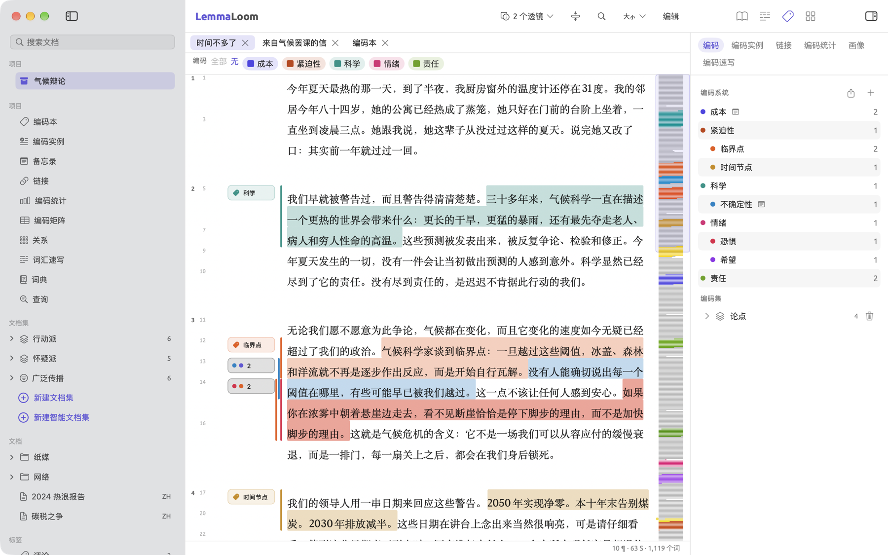
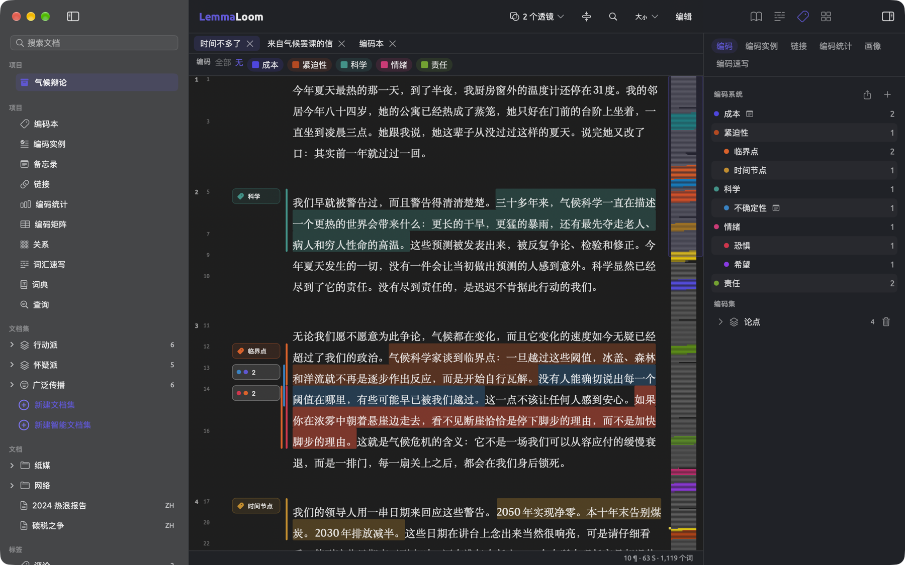
窗口中有些按钮可能处于停用状态。这些按钮与当前选中的文档或标签页无关，或者暂时还不能用于它。将鼠标指针悬停在这样的按钮上，可以看到它停用的原因。
导航栏
搜索文档位于导航栏其余部分的上方、窗口按钮的下方。在这个输入框中输入文字，导航栏就只列出当前项目中标题包含这段文字的文档。按下 Return 键会打开第一个匹配的文档，按下 Esc 键则清空输入框。编辑 ▸ 查找文档（⇧⌘F）会把焦点移到搜索文档输入框；如果导航栏已收起，这个命令会先展开导航栏。
搜索文档下方是一个分为若干部分的列表，排在最前面的是收藏。你给第一个项目加上星标后，这一部分就会出现，其中列出每个加了星标的项目。收藏下方的项目中列出资料库里的所有项目。点按一个项目即可将它设为当前项目，下面的项目部分随即列出当前项目的十个视图。这些视图从编码本、编码实例一直到查询，每个都在阅读器的一个标签页中打开，合起来构成项目视图栏；详见下文的项目视图栏。
文档集列出当前项目中创建的所有文档集，每个文档集都显示名称和文档数。点按文档集的名称，会在标签页中打开它；点按它的展开三角形，会显示文档集中的全部成员。这一部分末尾的新建文档集和新建智能文档集用来创建文档集。文档列出当前项目中的文档。分组先以文件夹的形式出现，其余文档排在后面。每篇译文都显示在它的原文下方。最底部的标签列出你为本项目文档添加的所有标签，每个标签后面是带有它的文档数。至少有一个文档带有标签时，这一部分才会出现。点按一个标签，会在标签页中打开带有它的文档，与文档集类似。
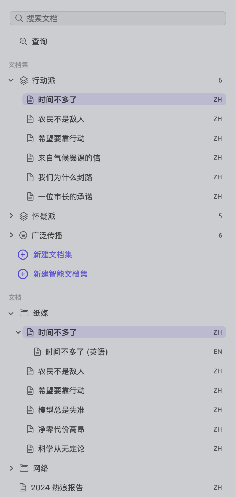
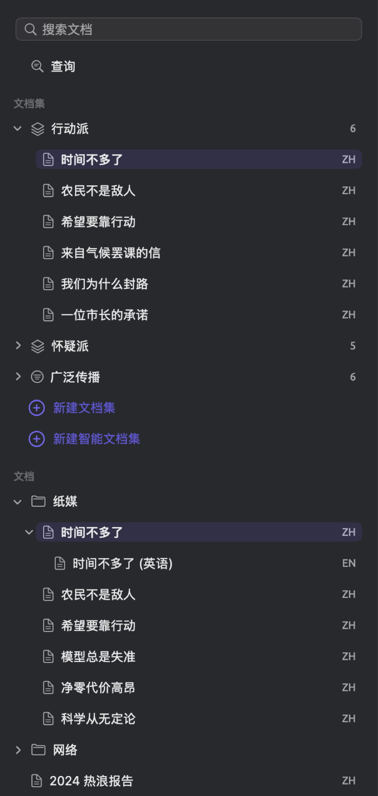
每个文档行都有一个表示文档类型的图标。如果文档设置了颜色，图标就使用这种颜色。图标后面是文档标题和语言代码，必要时还有一个索引状态图标。如果透镜或查询漏掉了某个文档，请检查这个文档是否带有状态图标。没有状态图标的行表示已经建立了索引。各个状态图标的含义如下：
| 状态图标 | 含义 |
|---|---|
| 进度环 | 正在建立索引；将鼠标指针悬停在上面，可以看到当前阶段和百分比 |
| 虚线圆圈 | 等待建立索引 |
| 暂停符号 | 这个文档的索引已关闭 |
| 问号 | 该语言不支持索引 |
| 红色三角形 | 建立索引失败；右键点按文档并选取重试索引 |
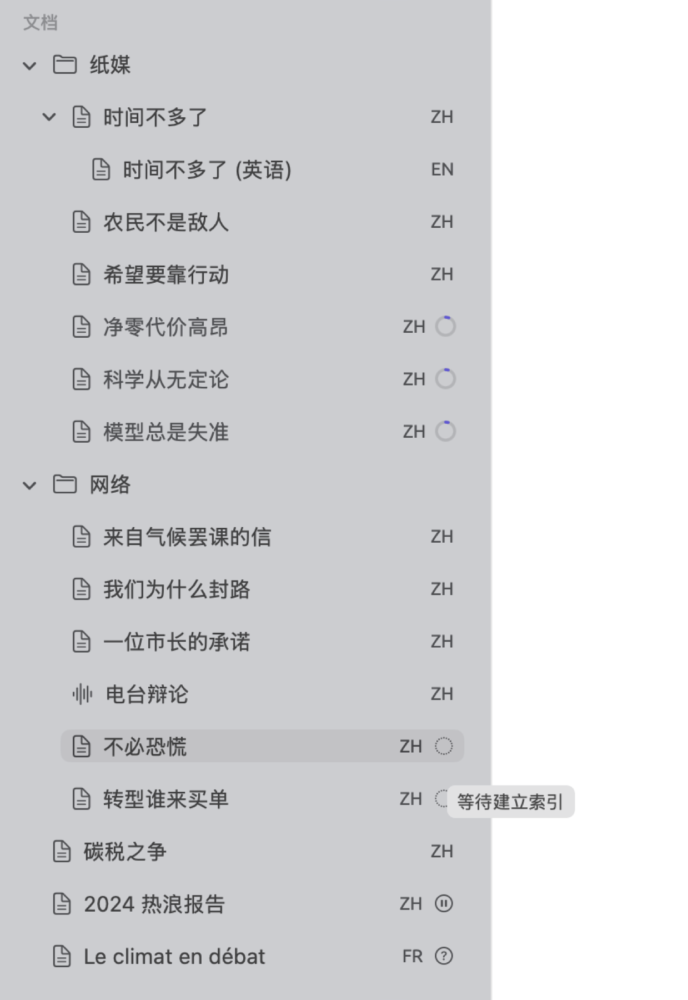
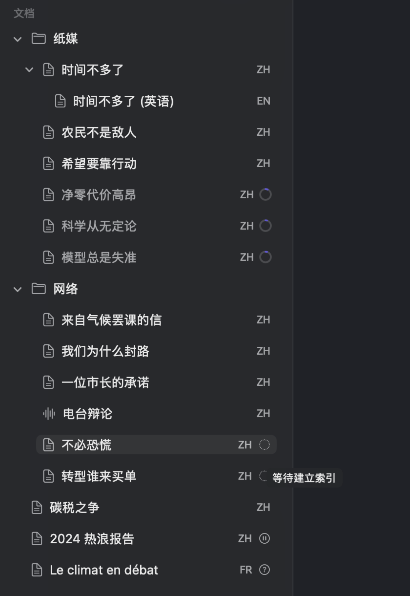
在导航栏中点按文档即可打开它。如果想用键盘操作，可以用 ↑ 和 ↓ 键在行之间移动，再按下 Return 键打开当前高亮的行。按住 ⌘ 键或 ⇧ 键点按，可以选择多行。在导航栏中右键点按文档，可以使用与这一行相关的上下文命令，包括在分屏浏览中打开、重命名、移到分组、文档集、信息、翻译、导出和删除文档。选中多行时，上下文菜单中有把它们加入文档集的命令（添加到文档集）和删除所选文档的命令（删除文档）。
菜单栏的项目菜单中也有上面的几条命令，作用于导航栏中当前选中的行。项目菜单还提供新建文档集、新建智能文档集和添加编码命令。其中的删除命令（⌘⌫）会删除选中的项目、文档集、分组或文档。
项目视图栏
通过项目部分打开的每一项，都会在标签页中打开自己的视图。视图中显示的是整个项目的信息。使用项目视图栏，你可以同时处理所有文档。
| 视图 | 显示的内容 | 详见 |
|---|---|---|
| 编码本 | 以树形显示项目的编码，你可以在这里创建、编辑和整理编码 | 第 7 章“编码” |
| 编码实例 | 项目中每一段已编码的文字，以及它所在的文档和它的编码 | 第 13 章“编码分析” |
| 备忘录 | 项目的备忘录 | 第 7 章“编码” |
| 链接 | 文字之间的链接 | 第 7 章“编码” |
| 编码统计 | 每个编码的使用次数，以及它覆盖的文本量 | 第 13 章“编码分析” |
| 编码矩阵 | 编码与文档或文档组交叉构成的表格 | 第 13 章“编码分析” |
| 关系 | 列出每对编码共同出现次数的表格 | 第 13 章“编码分析” |
| 词汇速写 | 在整个项目中，一个词在语法上与哪些词组合，例如气候危机和气候政策中受气候修饰的名词 | 第 12 章“词汇速写” |
| 词典 | 带类别的词表，例如一份模糊限制语词表 | 第 19 章“词典” |
| 查询 | 查询构建器，在整个项目上运行 | 第 15 章“构建查询” |
如果只想处理项目的某一部分，就打开一个文档集。文档集的标签页提供同样的十个视图，范围仅限于这个文档集。标签页顶部的一排按钮让你快速切换到各个视图。窗口较窄时，这排按钮会变成一个菜单，以当前所选视图的名称作为标题。
视图的页眉只有一行，左边是视图的名称，右边是相关的工具，例如搜索框。要让某个视图留在文档旁边，可以使用在窗口中打开按钮，它位于页眉的最右端。窗口 ▸ 编码本和窗口 ▸ 查询会在单独的窗口中打开这两个视图。项目 ▸ 打开则可以在单独的标签页中打开项目视图栏中的任一视图。
文档标签页
每个打开的文档、视图或文档集，在阅读器上方的那一排中都有自己的标签页。点按标签页上的 × 可以关闭它。
想快速看一眼时，可以点按查询结果中的一条命中，或者词汇速写中的一个例句，这样会打开一个预览标签页。下一次快速查看会自动替换这个预览标签页。如果想保留它，点按这个标签页本身即可。
| 命令 | 快捷键 |
|---|---|
| 文件 ▸ 关闭标签页 | ⌘W |
| 窗口 ▸ 显示上一个标签页 | ⇧⌘[ |
| 窗口 ▸ 显示下一个标签页 | ⇧⌘] |
右键点按标签页，可以选择在新窗口中打开文档（在新窗口中打开），或者在分屏浏览中打开（在分屏浏览中打开）。分屏浏览把所选文档显示在当前文档旁边。想并排比较两个文档，或者对照原文阅读译文时，就可以使用分屏浏览。关于分屏浏览的更多内容，请参阅第 9 章“译文与分屏浏览”。窗口菜单中也有相同的选项。
阅读器
阅读器以文本形式显示当前标签页中的文档。文本左侧是页边栏，其中显示段落编号、句子编号，以及每段已编码文字旁边的彩色竖条。点按段落编号会选中整个段落，点按句子编号会选中这个句子，点按竖条则选中对应的文字。
文档概览位于阅读器的右边缘。文档概览就像一条用颜色区分内容的滚动条，显示你在文档中的当前位置；与滚动条不同的是，它还显示已启用的透镜、书签和搜索命中分别落在哪里。在文档概览中任意位置点按或拖移，会直接滚动到文档的相应部分；将鼠标指针悬停在上面，则可以预览那个位置的文字。
要选择文本，可以在任意长度的一段文字上点按并拖移，也可以点按一个词。在已建立索引的文档中，点按一个词就只选中这个词，检查器的语法标签页会显示这个词的语法详情。再次点按同一个词，会取消选择。在录音的转写文本中，点按一个词会把播放位置移到文件中这个词所在的地方。
只要文档中有选中的内容，阅读器底部就会显示选区栏。选区栏最左边用引号显示所选文字的开头，后面依次是书签、编码、添加到词典、备忘录和链接。只有带词典的项目才会显示添加到词典。本章后文的应用编码会详细介绍如何应用编码。文档菜单中也有书签（⇧⌘B）、编码（⇧⌘C）、备忘录（⇧⌘M）和链接（⇧⌘L）命令。按下 Esc 键或点按选区栏中的 ×，可以取消选择。
状态栏位于阅读器底部。它的左侧显示所选文字的位置。选中一个词时，状态栏会显示类似 ¶ 4 · S 17 · T 3 的内容，表示第 4 段、全文第 17 句，以及这个句子中的第 3 个词符（计算词符时也包括标点符号）。选中一段文字时，状态栏显示其中的词符数，以及它的起止位置。状态栏右侧显示文档的总体规模，即段落数、句子数和词数；建立索引期间，这里改为显示索引进度。
标题栏
标题栏横跨阅读区顶部，与窗口按钮位于同一高度。它的左侧显示 LemmaLoom 的名称，右侧是与当前标签页中文档相关的控件，从左到右依次是：
- 透镜菜单。没有启用透镜时，这个控件显示透镜；启用一个透镜时，显示这个透镜的名称；启用多个透镜时，显示透镜的数目，例如 2 个透镜。阅读文档时，透镜可以帮你突出显示其中的规律。透镜或者按词类等语法特征突出显示文本，或者按你自己的标注突出显示文本。文档建立索引之前，透镜控件处于停用状态。关于透镜的更多内容，请参阅第 6 章“透镜”。
- 折叠按钮，悬停提示为仅显示透镜标注的句子。点按这个按钮，会隐藏文档中除已启用透镜所标注句子以外的所有内容。只有当文档已建立索引，并且有透镜能够标注部分文本，也就是启用了编码和书签以外的某个透镜时，这个按钮才会显示。如果文档中有可以通过编码和书签透镜显示的编码实例或书签，这个按钮也会出现。再次点按这个按钮，就会恢复显示整个文档，按钮的悬停提示也会变为重新显示整个文档。
- 放大镜图标，悬停提示为在文档中查找。点按这个图标，会在文档文本的正上方打开搜索栏。编辑 ▸ 查找（⌘F）的作用相同。查找下一个（⌘G）和查找上一个（⇧⌘G）用来依次浏览查找结果。
- 字体、边栏与文字大小，即带有一大一小“大”“小”二字的控件。它的下拉菜单包括字体、边栏（关闭、段落、句子或两者）、版式（单栏或双页跨页）、增大文字（⌘+）、减小文字（⌘−）和重置文字大小（⌘0）。
- 编辑，把阅读器切换到编辑当前文档文本内容的模式。编辑结束之前，取消和存储按钮会取代它。关于编辑的详细说明，请参阅第 5 章“阅读与编辑”。
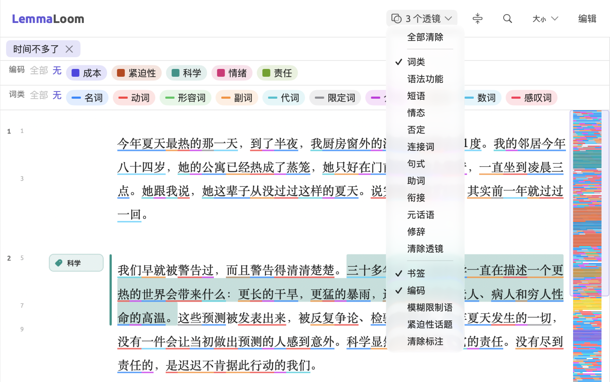
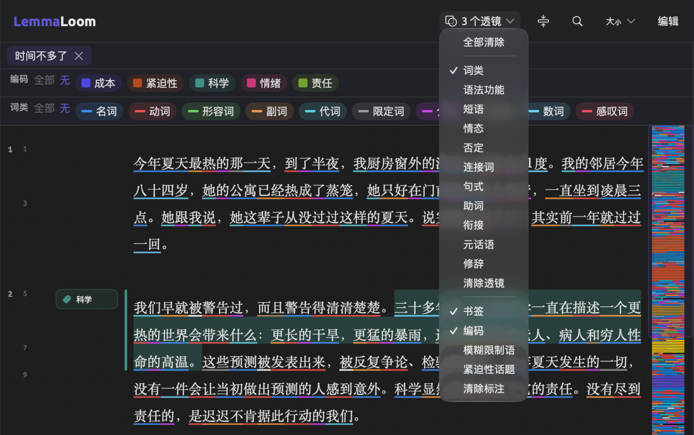
每个新文档都启用了两个透镜，即编码和书签，它们把编码实例和书签作为标注显示在文本上。因此，在透镜仍为默认设置的文档中，菜单显示的是 2 个透镜。
透镜菜单把透镜分成几组。第一组是基于语法分析的透镜，包括词类、语法功能以及该文档语言可用的其他选项。接下来是清除透镜，它清除上面列出的这些透镜以及所有查询透镜。然后是你自己的分析器和清除分析器，最后是书签、编码、项目的词典透镜和查询透镜，以及清除标注，它停用这最后一组。点按其中任何一项，就会相应地启用或停用它。
每个透镜都会在文档上方的一行中显示它的图例，其中以颜色的形式列出代表各个标注项的一系列图例项。点按一个图例项，可以停用或启用它所代表的标注项。图例的开头是透镜本身的名称，后面是全部和无，分别用来启用或停用所有标注项。一个透镜中可能有多种颜色，而你也许只想显示其中一种。这时，右键点按需要的图例项，然后选取仅启用此项即可。
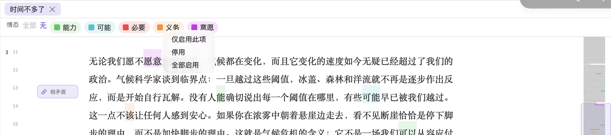
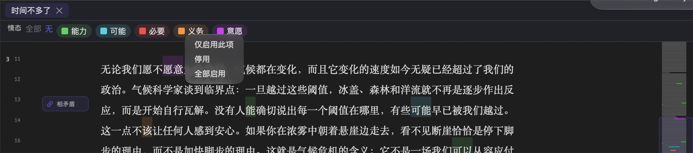
检查器
检查器作用于当前标签页中显示的文档，让你更仔细地查看正在处理的文档。检查器顶部有四个图标，各代表一个标签页。书本代表文本，一排分开的词代表语法。价签代表编码，四个方块代表多重模式。将鼠标指针悬停在图标上可以看到它的名称；也可以使用显示 ▸ 检查器菜单项及其中的各个快捷键。
每个标签页又分为若干分面。第 10 章“文本检查器”、第 11 章“语法检查器”、第 13 章“编码分析”和第 14 章“速写空间”会逐一介绍各个分面。用图标下方的那排按钮在分面之间切换。
| 标签页 | 快捷键 | 分面 | 用途 |
|---|---|---|---|
| 文本 | ⌥⌘1 | 概览、详细信息、书签 | 文档的统计数据，例如词数和可读性；文档的属性和标签；文档的书签 |
| 语法 | ⌥⌘2 | 语法、句子、结构、形式 × 功能、搭配词、词汇速写、语篇 | 所选词或句子的语法，以及整个文档的语法模式 |
| 编码 | ⌥⌘3 | 编码、编码实例、链接、编码统计、画像、编码速写 | 编码系统、本文档的编码实例和链接，以及相关的统计数据 |
| 多重模式 | ⌥⌘4 | 速写空间、查询 | 比较一个词在不同编码或属性值下的用法，以及在本文档上运行的查询 |
语法分面针对当前所选的词，句子分面针对当前所选的句子。选中之前，它们分别显示请选择一个词和请选择一个句子。
检查器的标签页、分面和面板宽度为每个文档分别保存。如果当前标签页中是视图或文档集，检查器会关闭，它们的工具改为显示在阅读区中。在另一个窗口中打开文档时，那个窗口有自己的检查器。
调整窗口布局
只想阅读文档时，隐藏两侧的面板，就可以使用整个窗口的空间。导航栏按钮和检查器按钮都在窗口顶部的工具栏中。导航栏按钮紧挨着左上角的窗口按钮，检查器按钮则在右上角。显示菜单中有相应的命令：
| 命令 | 快捷键 |
|---|---|
| 显示 ▸ 显示/隐藏导航栏 | ⌃⌘S |
| 显示 ▸ 显示/隐藏检查器 | ⌃⌘I |
拖移阅读器与导航栏或检查器之间的分隔线，可以调整它们的宽度。检查器最多可以占据窗口的三分之二，足以显示较宽的表格或较长的句子结构图。每个文档会分别记住检查器是否隐藏。视图和文档集的标签页把工具显示在阅读区中，因此检查器按钮和显示 ▸ 显示/隐藏检查器在这些标签页上已停用。
应用编码
编码分两个阶段，先创建编码，再把编码应用到文字上。编码可以在检查器的编码分面中定义，也可以在编码本中定义。把编码应用到文字上，则使用编码面板。
创建编码
“气候辩论”项目的编码本中有五个顶层主题编码，分别对应这项研究考察的一个主题，即“成本”“情绪”“责任”“科学”和“紧迫性”。其中一些编码带有子编码，描述相关主题在文本中的不同表现方式，例如编码“紧迫性”下的“临界点”和“时间节点”，以及编码“情绪”下的“恐惧”和“希望”。此外还有第六个顶层编码“说话人”，其中包含“电台辩论”中的三位说话人，即“主持人”“活动人士”和“怀疑论者”。
新建编码的步骤如下：
- 打开一个文档。
- 在检查器中点按编码标签页（⌥⌘3），然后点按编码。
- 点按编码系统右侧的 +。
- 在新建编码对话框的名称中输入名称。
- 在颜色下点按一种颜色。没有颜色的编码会以主题的强调色呈现。如果打算使用多个编码，请选一种颜色。
- 格式保持为高亮，适用范围保持为项目，然后点按存储。
除了这些栏目，对话框中还有其他栏目；第 7 章“编码”介绍了所有可用的选项。格式还可以是下划线或方框样式。适用范围可以把编码限定在一个文档集或一个文档中使用。标签为编码加上标签。通过属性，可以为这个编码的每个编码实例分别指定值。说明用来描述编码的含义，并说明何时应当使用它。
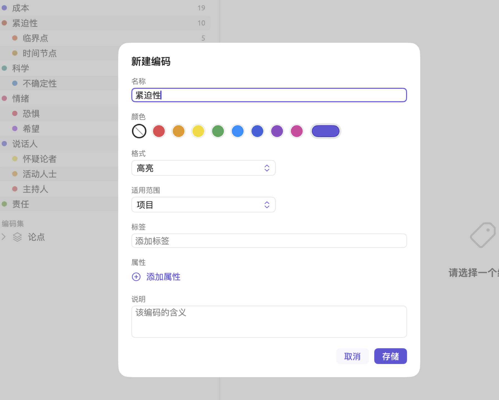
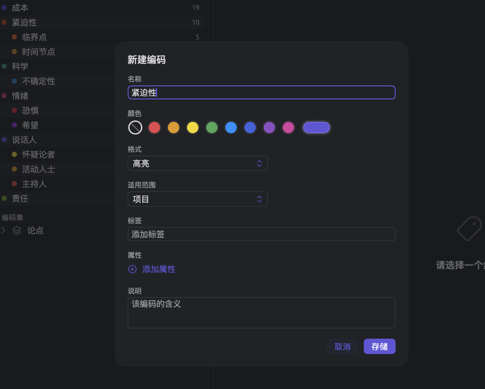
创建子编码，可以把宽泛的主题细分为在你的资料中以不同形式出现的子主题。在编码列表中右键点按任一编码，然后点按添加子编码，即可创建子编码。
这些编码也会出现在项目视图栏的编码本中，点按那里列表底部的添加编码按钮，可以继续添加编码。也可以在菜单栏中选取项目 ▸ 添加编码创建编码，它会打开同一个新建编码对话框。
为一段文字编码
“时间不多了”的第四段列出了三个目标：“2050年实现净零。本十年末告别煤炭。2030年排放减半。”这些期限都指向必须完成某些行动的具体日期，所以它们的编码是“时间节点”。下图中选中的是同一段中靠后的一句话，编码面板已经打开。这句话是“一个在所有现任官员都退休之后才到期的期限，根本算不上期限。”
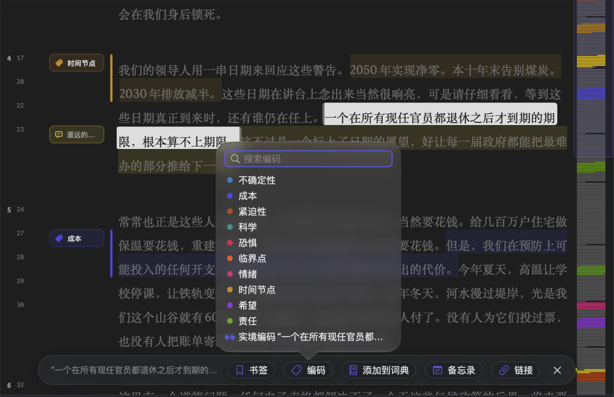
为一段文字编码的步骤如下：
- 在阅读器中选中要编码的文字。要为整个段落或句子编码，可以改为点按页边栏中的编号。
- 在阅读器底部的选区栏中点按编码，或者选取文档 ▸ 编码（⇧⌘C）。
- 在面板中点按编码。
编码应用到文字上之后，这段文字就会显示为所选编码的颜色，页边栏中它的旁边出现一条同色竖条，编码分面中该编码旁边的数字加一。面板会一直打开，直到你按下 Esc 键；一段文字可以带有多个编码。
面板打开时，焦点会自动落在搜索编码输入框中。输入名称的一部分，就会在已有编码中搜索匹配项。按下 Return 键会应用第一个匹配的编码；如果这段文字已经带有这个编码，按下 Return 键则会移除这个编码实例。如果想应用其他编码，可以先用方向键（↑ 和 ↓）在匹配项之间移动，再按 Return 键。没有与输入名称相同的编码时，会出现添加编码“…”；选择它，就会以输入的名称新建一个编码并应用。
列表的最后一项是实境编码“…”。选择这一项，会当场新建一个编码并立即应用，编码的名称就是所选文字的实际内容。文档 ▸ 实境编码（⇧⌘V）不必打开面板，就能完成同样的操作。
在已建立索引的文档中为单个词编码时，点按这个词即可选中它，然后点按选区栏中的编码，再从面板中选择所需的编码。
从一段文字上移除编码，方法与应用编码差不多。点按这段文字在页边栏中的竖条，就可以再次选中它，然后打开面板。这段文字已有的编码旁边带有勾号图标；点按其中一个，会移除这个编码与当前所选内容重叠的所有编码实例。
如果对刚才的编码不满意，编辑 ▸ 撤销应用编码（⌘Z）会撤回上一步操作。如果上一步是从文字上移除编码，这个菜单项则显示为撤销删除编码实例。在这两种情况下，⇧⌘Z 都用来重做。关于可以撤销和重做的操作，详见第 23 章“撤销与重做”。
编码本身也可以带有属性。把带属性的编码应用到一段文字之前，会先出现一个小对话框，询问这些属性的值。第 7 章“编码”介绍如何用带属性的编码为文字编码，那一章还介绍备忘录、链接和书签。
工作保存在哪里
大多数情况下，LemmaLoom 会自动保存你的更改。不过有两种情况需要你手动保存（存储查询和编辑文档文本）。编辑文档文本时，必须点按存储按钮，LemmaLoom 才会保存所做的更改。此外，没有存储的查询会在你退出 LemmaLoom 时丢失。
存放这一切的资料库是一个名为 LemmaLoom.lemmadb 的文件夹，位于你个人资源库中这个应用的容器里：
~/Library/Containers/app.LemmaLoom/Data/Documents/LemmaLoom.lemmadb
访达会隐藏个人文件夹中的资源库文件夹。要前往那里，请在访达中选取前往 ▸ 前往文件夹…（⇧⌘G），然后粘贴路径。
你在 LemmaLoom 中的所有工作都存放在同一个资料库中，包括文档、项目、索引结果、编码、编码实例、备忘录、链接、书签、文档集、分组、属性、词典、已存储的查询以及你自己的分析器。对于导入的 PDF 文档，资料库只保存其文本内容，并保留文件名。对于导入的网页文档，LemmaLoom 只保存其文本内容，并保留网址。对于导入的音频和视频录音，LemmaLoom 既保存转写文本，也保存文件本身的副本。此外，你收藏的项目、每个项目中打开的标签页以及你在每个文档中的位置，也都保存在资料库中。你在 LemmaLoom 设置窗口中所做的设置则保存在这台 Mac 上，详见第 24 章“设置与外观”中的设置保存在哪里。
如果想把项目转移到另一台电脑，或者只是在别处备份项目，可以使用 LemmaLoom 提供的项目交换和导出功能（见第 22 章“交换与导出”）。文件 ▸ 导出 ▸ LemmaLoom 项目会把项目导出为一个 .llz 压缩归档，其中包含文档及其编码实例和索引，以及附带的音频或视频录音；归档保留全部内容。文件 ▸ 导入 ▸ LemmaLoom 归档可以把这样的归档重新导入 LemmaLoom。文件 ▸ 导出 ▸ REFI-QDA 项目把项目导出为 REFI-QDA 交换格式，支持 REFI-QDA 标准的软件都可以打开这种文件。如果项目要离开 LemmaLoom、改在兼容的软件中打开，最适合使用这种格式。
你可以手动复制 LemmaLoom 的资料库文件夹，用于备份或迁移。先退出 LemmaLoom，然后复制整个 LemmaLoom.lemmadb 文件夹。
隐私
帮助 ▸ 发送反馈会打开一个窗口，供你撰写反馈。写完后点按撰写邮件，内容就会作为一封新邮件交给你的邮件程序。邮件出现在邮件程序中之后，你可以在发送前修改。附上系统信息一开始已勾选，这个选项会附上你所用的 LemmaLoom 和 macOS 版本、处理器类型名称、内存大小以及 LemmaLoom 的界面语言。选项下方的文字列出了具体附上哪些内容。
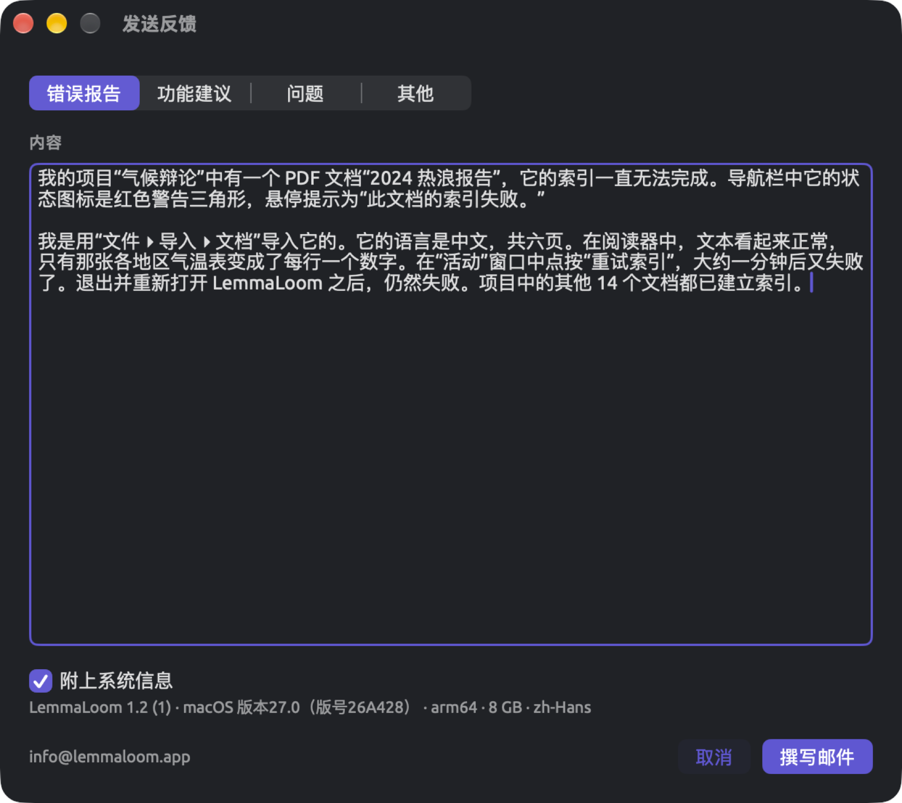
LemmaLoom 导出的 .llz 归档文件或 REFI-QDA 项目包含每个文档的全部内容。
从导入到第一次分析
分析从把文本导入 LemmaLoom、记录这些文本的某些特征开始。之后，把文本分成文档集并进行编码，再分析各个文档集之间的差异。对“气候辩论”所做的这项分析，最终结果是找出把行动派文本与怀疑派文本区分开来的那些词。
导入多篇文本
“气候辩论”项目中有十一篇评论性文本。其中六篇出自行动派，包括“来自气候罢课的信”；另外五篇出自怀疑派，包括“净零代价高昂”。为了把双方区分开来，项目使用了两个文档集，以及属性“立场”。
导入多篇文本的步骤如下：
- 选取文件 ▸ 导入 ▸ 文档（⇧⌘I）。
- 选中所有文件，然后点按打开。
- 导入文档对话框会为每个文件各出现一次，并在右上角显示当前位置，例如 1 / 10。检查每个对话框，然后点按导入。
属性值可以在每个对话框中填写。你也可以用属性表格为多个文档指定同一个属性值，具体做法见下文的填写属性值。要跟踪建立索引的进度，可以选取窗口 ▸ 活动（⌥⌘0），或者留意导航栏中的进度环。下面的步骤中，只有制作关键词列表需要先建立索引，见下文的用关键词比较两个文档集。
填写属性值
在项目“气候辩论”中，每个文档的四个属性都有值。例如，在行动派的全部六个文档中，“立场”的值都是“行动派”。在属性表格中只需选取一次设置值 ▸ 立场，就能为这六个文档全部填好这个值。另一些值因文档而异，例如读者数，这些值需要在表格中逐个输入。
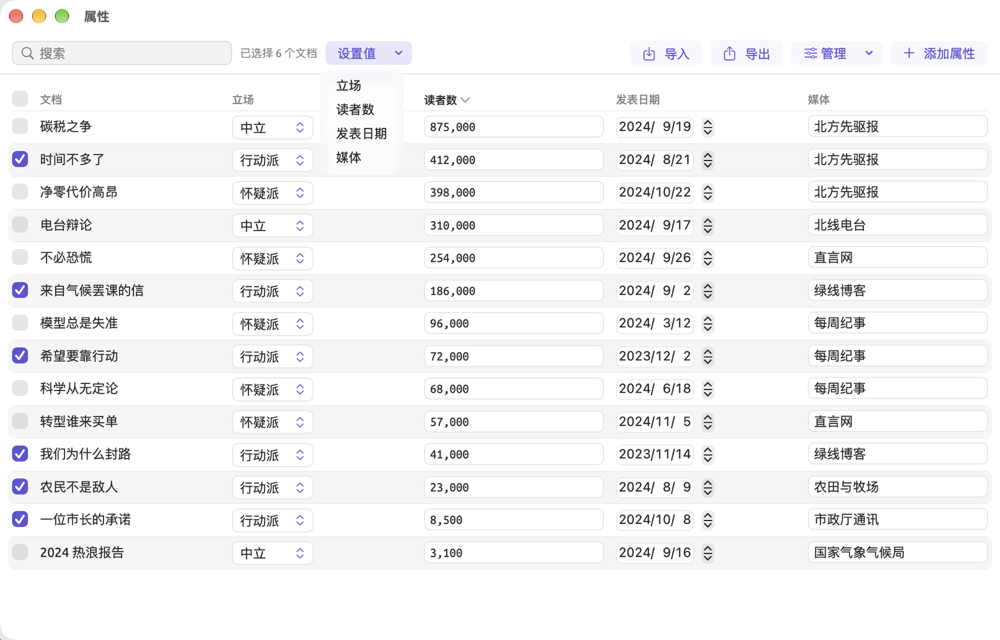

批量填写属性值的步骤如下：
- 选取项目 ▸ 属性，或者在项目下右键点按项目，然后选取属性。属性表格会在单独的窗口中打开。
- 在表格中，勾选共用同一个值的那些文档旁边的复选框。
- 选取设置值，再选取属性，在打开的对话框中选择或输入值，然后点按应用。
- 取消勾选这些文档，勾选共用下一个值的文档，用同样的方法设置。
- 对于因文档而异的值，在该属性的一栏中逐个输入。
建立文档集
文档集是有名称的文档集合。要告诉 LemmaLoom 一项分析应当涵盖哪些文档，通常就用文档集。“气候辩论”项目中有文档集“行动派”和“怀疑派”，各自包含一方的文章。你可以用查询比较这两个文档集，也可以分别在每个文档集内查询。智能文档集带有条件。如果一个文档满足这些条件，LemmaLoom 会自动把它加入智能文档集。例如，“读者数”属性值大于或等于 100,000 的文档都属于智能文档集“广泛传播”。关于文档集（包括智能文档集）、分组、标签和属性的更多内容，请参阅第 8 章“文档集、分组、标签和属性”。


用文档建立文档集的步骤如下：
- 在导航栏的文档部分点按第一个文档，然后按住 ⌘ 键点按其他文档。
- 右键点按其中一个选中的文档，然后选取添加到文档集 ▸ 从所选文档新建文档集。
- 文档集下会出现一个名为“新建文档集”的文档集，名称处于可编辑状态。输入名称，然后按下 Return 键。
为多篇文本编码
为多篇文本编码，方法与为一篇文本编码完全相同；具体做法请回看本章前文的为一段文字编码。
查看一篇文本的编码情况
在“气候辩论”项目中，“时间不多了”有 13 个编码实例，其中“成本”“责任”和“临界点”各有两个。
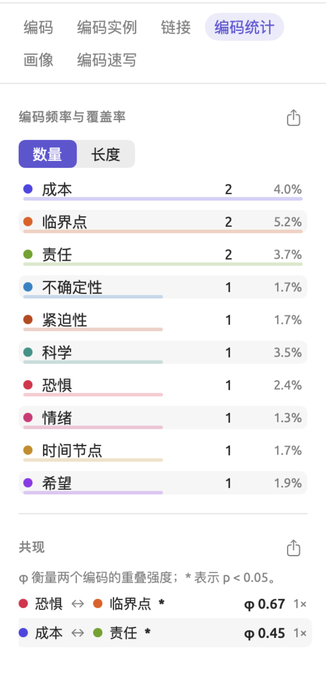
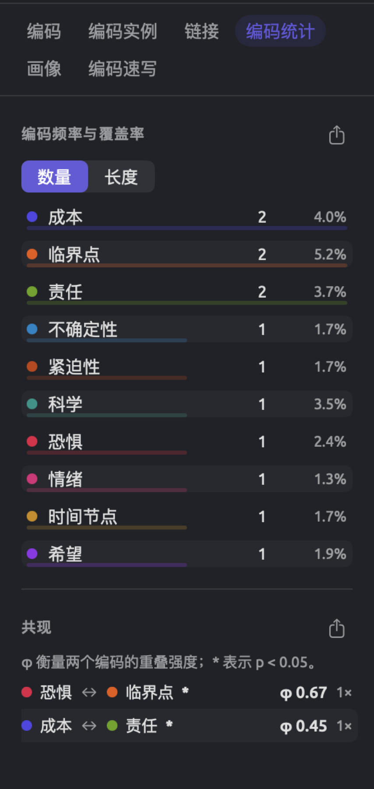
查看一个文档的编码的步骤如下：
- 把这个文档设为当前文档。
- 点按检查器的编码标签页。
- 点按编码统计。
编码统计分面中的编码频率与覆盖率列出当前文档中用到的所有编码，以及它们的频率和百分比。每一行显示有多少段文字带有这个编码，以及这些文字占文档全文的百分比，这个百分比称为编码的覆盖率。点按一行，阅读器就会显示它的一段文字。列表上方的数量按文字段数为编码排序，并据此调整条形的长度；长度则按覆盖的文本量排序和调整。列表下方的共现显示这些编码的共现情况；第 13 章“编码分析”介绍了这一部分，以及项目视图栏中涵盖整个项目的表格。
两个各用了五次的编码，覆盖的文本量可能相差很大。覆盖率表示带有这个编码的文字在文档中所占的比例，计算公式如下：
公式中的 coverage 就是覆盖率， 是带有这个编码的文字所含的字符数， 是文档的总字符数；空格和换行符也计入这两个总数。如果两段带有同一编码的文字部分重叠，重叠的字符在计算 时只计一次。
例如，“时间不多了”约有 1,700 个字符，所以 。假设其中有三段文字被编码为“紧迫性”，长度分别为 60、40 和 70 个字符。注意，这里的编码只是假设，示例项目对这篇文本的实际编码与此不同。在这几段文字互不重叠时，，覆盖率为：
“紧迫性”这一行显示 3 和 10.0%。如果后两段文字有 11 个字符重叠，那么 ，覆盖率为 ，这一行显示 9.4%。“紧迫性”的编码实例仍然是三个。用“临界点”或“时间节点”所做的编码实例各有自己的一行。文字段数按行、按编码分别统计。
用关键词比较两个文档集
关键词列表找出一组文档比另一组文档用得明显更多或更少的词。例如，“气候辩论”中的“行动派”文档集包含一个已存储的关键词查询，名为“关键词：行动派”。这个关键词列表把该文档集与“怀疑派”比较，找出使行动派的语言有别于对方的词。关键词列表统计的是建立索引时找出的词的出现频率，所以两个文档集中的文档都必须先建立索引。
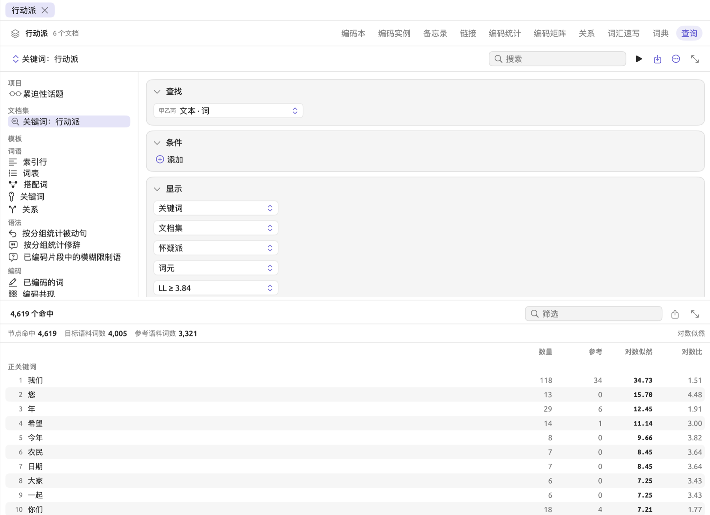
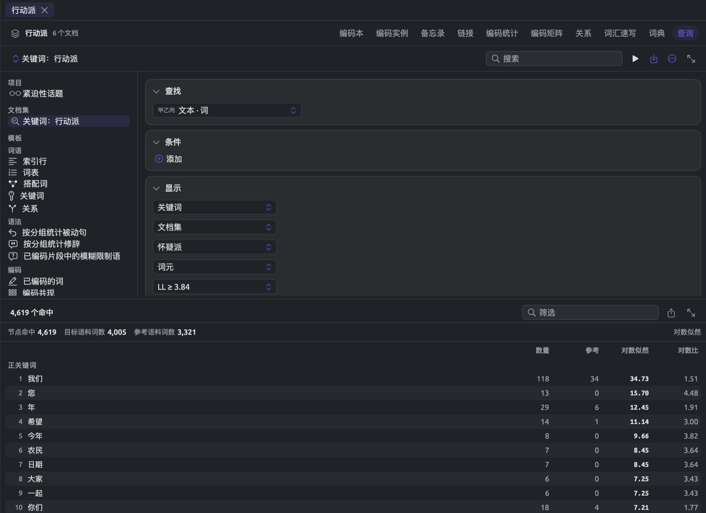
制作关键词列表的步骤如下：
- 在导航栏的文档集下点按第一个文档集。这个文档集会在一个标签页中打开。
- 在标签页顶部的那排按钮中点按查询。窗口较窄时，这排按钮是一个菜单，请从中选取查询。
- 在左侧一栏的模板下，点按词语组中的关键词。
- 在显示条件中，打开显示项目其余部分的菜单，选择文档集。在随后出现的菜单中，选择另一个文档集。
- 显示词元的菜单保持不变，这样英文的 cost 和 costs 会算作同一个词。显示 LL ≥ 3.84 的菜单也保持不变。
比较结果显示在构建器下方，分为正关键词和负关键词两个列表。正关键词列出在第一个文档集（目标语料）中比在第二个文档集（参考语料）中出现得更频繁的词。负关键词则相反，列出在目标语料中比在参考语料中出现得更少的词。这两个列表上方，目标语料词数显示目标语料的总词数，参考语料词数同样显示参考语料的总词数。如图所示，“行动派”是目标语料，“怀疑派”是参考语料。表格的每一行显示以下信息：
- 数量，即这个词在目标语料中出现的次数；
- 参考，即它在参考语料中出现的次数。分数会把这两个次数标准化；
- 对数似然，即表明差异并非偶然的证据有多强；
- 对数比，即两个文档集之间差异的大小，以这个词的相对频率翻了几番来衡量。相对频率是一个词在所属文档集总词数中所占的比例。值为 1 时，这个词在目标语料用词中所占的份额是它在参考语料用词中所占份额的两倍；值为 2 时是四倍；值为 −1 时是一半。
假设钱在行动派的文本中每 1,000 个词出现 2 次，在怀疑派的文本中每 1,000 个词出现 1 次。也就是说，它在目标语料中出现的频率是参考语料中的两倍，目标语料与参考语料的相对频率之比为 2。由于相对频率翻了一番，对数比约为 1。以 2 为底的对数用来数翻了几番，它算出的是 2 的几次方等于某个数。因此，上例中相对频率之比等于 ，对数为 1。反过来，比值 得到 −1。
第 16 章“查询结果与统计”用实例说明了这两种计分方法，并详细介绍如何选择阈值。各行按对数似然分数排序。分数高，说明差异很可能不只是偶然造成的。
如果仍有文档正在建立索引，命中数旁边会另外显示已纳入的文档数，例如 4 / 6。


要保留这个查询：
- 点按存储按钮（一个方框，箭头指向框内），然后选取存储。
- 输入名称，可用范围保持为文档集。
- 点按存储。
这个已存储的查询保存在该文档集中。
阅读关键词背后的段落
在“气候辩论”项目中，农民出现在行动派的关键词列表上，而行动派对这个词的提及几乎都出自同一篇文本“农民不是敌人”。在一篇文本之内，搜索栏可以带你逐一查看这个词出现的每个位置：
- 打开文档集中的一篇文本。
- 按下 ⌘F，输入这个词。文本中会标出当前命中位置，文档概览则显示所有命中位置；搜索栏显示你当前位于第几个命中。搜索栏会匹配文本中任何位置的字符，并且不区分大小写。因此，搜索
天气也会命中 十一天气温 这样的字串。遇到这类结果，跳过即可。 - 按下 ⌘G 或 Return 键转到下一个命中位置（⇧⌘G 返回上一个），并阅读周围的文字。
- 为与你的研究问题相关的文字编码。
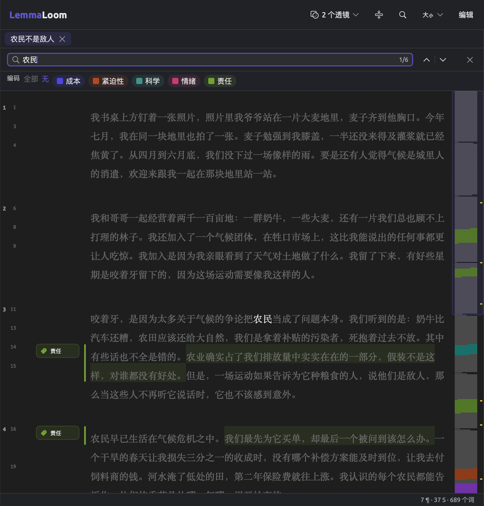
要在整个文档集中查找这样的规律，请使用文档集查询视图中的索引行模板，把这个词作为词元输入。详见第 16 章“查询结果与统计”中的索引行。
关于编码的更多内容，请参阅第 7 章“编码”和第 13 章“编码分析”。关于基于语法的分析，请参阅第 6 章“透镜”、第 11 章“语法检查器”和第 12 章“词汇速写”。第 15 章“构建查询”介绍如何构建查询。